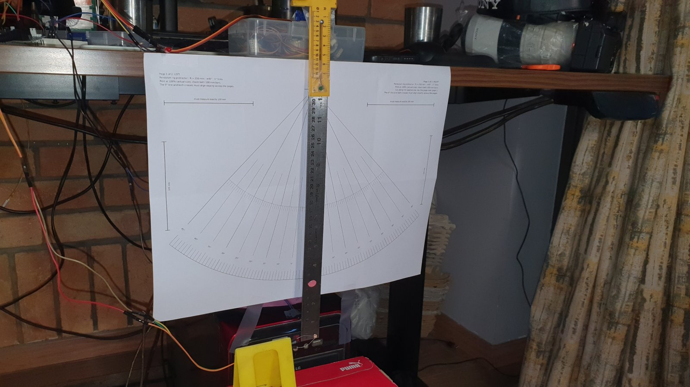
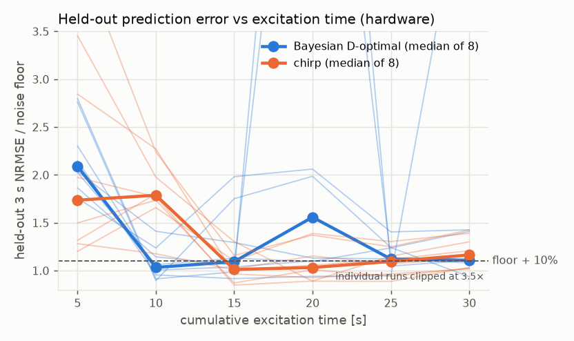
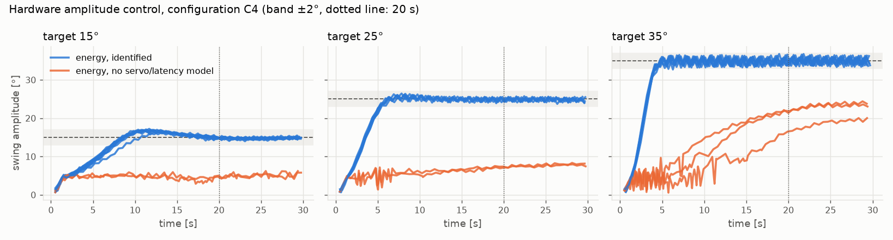

A self-driving pendulum lab: active system identification and latency-compensated control on a low-cost rig
Technical report, 29 September 2026. Repository: pendulum-active-id. Every number in this report comes from a logged run; the generated result pages are in docs/results/, and the day-by-day record, failures included, is in docs/engineering_log.md.
1. Summary
A camera watches a pendulum that hangs from the arm of a hobby servo. With no human in the loop, the system:
- identifies the pendulum's physics from its own experiments, and chooses the next experiment by Bayesian D-optimal design, under a safety constraint;
- estimates the pendulum's state from frames that arrive about 150 ms late, using an extended Kalman filter with delayed measurements and forward prediction;
- controls the swing amplitude with an energy-shaping controller built on the identified model.
The rig is built only from parts I already owned: an Arduino UNO, an SG90 micro-servo, a 30 cm steel ruler, a breadboard power module, a photoresistor light gate, and a Sony α7 IV used as a USB webcam.
| Question | Result on the physical rig |
|---|---|
| Can the identified model control the swing? (R-C1) | Yes: 19/19 trials at 15°, 25° and 35° reach and stay within ±2° in 4–12 s. The 95% CI of 82–100% establishes the ≥ 80% requirement. |
| Is the camera's timing trustworthy? (R-S4) | Yes: the swing period from the camera matches an independent light gate, read by the microcontroller's clock, within 0.07–0.09%. |
| Does the identified model agree with an independent measurement? | Yes: the identified pendulum gives a small-swing period of 0.934 s; the light gate measured 0.933 s. |
| Do self-chosen experiments identify the system faster than a standard sweep? (H1) | D-optimal reached within 10% of the held-out noise floor in a median of 10 s against 15 s for a chirp. It was faster in 5 of 6 complete pairs and tied in 1 (median ratio 0.67, paired Wilcoxon p = 0.06). The pre-registered target (ratio ≤ 0.5) was not met. |
| Does modelling the servo and the latency improve control? (H2) | Yes: a 95% lower amplitude error (median 0.57° against 12.0° over 7 interleaved pairs, paired Wilcoxon p = 0.016). Without the model the controller never reached any target (0/7). |
| Can the damping law be identified? (H3) | No: viscous and quadratic damping are indistinguishable on held-out data (16 runs, p = 0.43), and there is no measurable dry friction. |
| Camera latency ≤ 150 ms (go/no-go) | Failed as measured: 151–164 ms median. Control works regardless. |
| Static angle accuracy ≤ 1° (R-S3) | Failed as measured: 1.42° RMS. The reference was a hand-held ruler aligned by eye from the side (see §5.1). |
The requirements and hypotheses were frozen before any hardware data existed. Three criteria were revised once, after the simulation campaign and before any hardware identification data (v1.1, §2). Every failure above is reported against the criterion as written.
2. Hypotheses and pre-registration
- H1: Bayesian D-optimal excitation reaches a held-out 3 s prediction error within 10% of the noise floor in ≤ 50% of the experiment time a chirp needs.
- H2: Modelling the servo and compensating the camera latency reduces the closed-loop RMS amplitude error by ≥ 30%, compared with the same controller without them.
- H3: Viscous + Coulomb and viscous + quadratic damping are distinguishable by held-out likelihood.
Revision v1.1 (2026-09-27, applied after the simulation campaign and before hardware identification) changed three things:
- H1: the wording at v1.0 compared the protocols at the full budget, where the chirp had already reached the noise floor, so it mostly measured noise.
- R-I1: near 1 Hz, only the servo's combined phase delay is identifiable, not its bandwidth and dead time separately.
- Go/no-go item 3: revised to match.
The v1.0 wording is kept in requirements.md, and the simulation results are reported against both versions.
3. System
Hardware:
- An SG90 servo on a separate 5 V supply. Powering it from the UNO's 5 V pin dropped the rail by 0.7 V at every move; the separate supply cut that to 0.02 V.
- The arm is a 8.1 cm lever.
- The pendulum is a 30 cm steel ruler hung from the arm tip (L_eq ≈ 21.7 cm).
- Two coloured paper markers: green on the pivot, pink on the rod.
- A white LED and a photoresistor form a light gate at the bottom of the swing.
- A red LED in the camera's view is used to measure latency.
- The replication guide, with wiring hole by hole, is
hardware_setup.md.

Firmware: the board is a thin I/O slave.
- Servo pulses; pings for clock synchronisation; light-gate edges timestamped in µs.
- A servo release command: no pulses, so the servo goes limp.
- A servo home stored in EEPROM, so the arm powers up pointing straight down.
Software (Python, 89 tests, CI on every push):
- Model: a rigid pendulum on an accelerating pivot, with viscous, Coulomb and quadratic damping; the servo is a delayed second-order position loop with rate and acceleration limits.
- Identification: a windowed simulation-error fit with Gaussian priors and a Laplace posterior (numba, 1–5 s per fit).
- Experiment design: a posterior-averaged D-optimal criterion over a library of sines, two-tones and bursts. Any candidate predicted to exceed 60°, or to leave more than 45° at its end, is rejected.
- Estimation: an EKF over [θ, ω, φ, φ̇] that accepts late frames. Its measurement noise grows with angular rate × timestamp jitter, and an innovation gate rejects outliers.
- Control: energy shaping with an integral term; commands are slew-limited and low-pass filtered, with the filter's delay added to the prediction horizon.
- Safety stops: hold φ = 0 on |θ| > 70°, on a stalled camera, on a lost marker, or on repeated rejected frames.
- Architecture: one hardware-abstraction interface, implemented by both the simulator and the real rig, so every script also runs as a dry run against a simulated rig.
4. Method on the rig
- Calibration from the markers alone:
- The servo sweeps ±30°, and a circle fit to the green marker's positions gives the servo axis (fit RMS 0.07–0.23 px).
- The hanging rod gives the camera roll.
- The arm angle against the pulse width gives the servo gain and zero.
- A 15 s check compares the live feed with the saved calibration. The camera re-zoomed or shifted after several restarts, and the check caught every one.
- Latency: the board toggles the red LED at random times; the frame that first shows each toggle gives the delay. The capture latency (≈ 145 ms) is subtracted from each frame's arrival time.
- Identification: open-loop chirps and D-optimal segments, fitted to all recorded data. Frames captured while the laptop is computing between segments are excluded, so that the protocol that computes longer gets no free data.
- Control trials: 30 s each. Before and after every trial the servo is released until the camera sees the pendulum at rest: a holding SG90 kept pumping the swing through its dead band. Each trial logs every servo command, and the command-jitter statistics are reported.
5. Results
5.1 Sensing
| Requirement | Result | Verdict |
|---|---|---|
| R-S1: frame rate | 30.0 fps at 1280×720 (MJPG, DirectShow), from the frame logs | Met (at a higher resolution than specified) |
| R-S2: markers detected in ≥ 98% of frames | 100% of frames in every identification run (600–750 frames each) | Met |
| R-S3: static angle, RMS ≤ 1.0° | 1.42° (0.89° after removing a common +1.10° offset). Hand-held reference, aligned by eye from the side to stay out of the camera's view. The owner considers ±45° the most reliable points: errors −0.29° and +1.60°. | Fail as measured |
| R-S4: camera vs light-gate period ≤ 0.2% | 0.067–0.093% over 3 hands-free free decays | Met |
| R-S5: latency median ≤ 150 ms (go/no-go) | 151–164 ms across sessions (DirectShow). Media Foundation gave 153 ms, but with duplicate frames and stutter. | Fail as measured |
| R-S6: clock offset ≤ 2 ms | 1.6–2.5 ms | Marginal fail |
The camera's noise at rest is 0.024° RMS (0.1 px centroid jitter), so the R-S3 error is dominated by the reference, not the camera.
5.2 Identification (H1)
- Held-out set: a multisine, a free decay from 25° and a burst, recorded once and never fitted.
- Campaign: 8 blocks, each pairing one chirp unit with one D-optimal unit in a random order (30 s each, 5 s segments). They ran over two sessions, and 16 units are valid.
- One further unit was invalidated because the rod stuck at its pivot (owner report). Its κ and held-out error were off.
- One unit was interrupted and never saved a record.
- Noise floor: held-out 3 s NRMSE of one fit to all 16 units pooled = 0.0461.
| Time to within 10% of the floor | |
|---|---|
| D-optimal | median 10 s |
| Chirp | median 15 s |
| Ratio, per complete pair | 0.67, 0.67, 0.67, 0.50, 1.00, 0.67 |
- Median ratio 0.67: D-optimal was faster in 5 of 6 complete pairs and tied in 1. The paired Wilcoxon p = 0.06 is the smallest achievable with 5 decisive pairs.
- In 2 blocks at least one protocol never came within 10% in 30 s.
- H1 as pre-registered (ratio ≤ 0.5) is not supported. The self-chosen experiments are about a third faster, not twice as fast. (
results/e3_hardware.md,figures/e3_hw_nrmse.png) - Why the advantage is smaller than in simulation (where it was 5 s against 15 s, p ≈ 2e-11):
- D-optimal's first segment is designed from the prior. It is always a strong resonant sine, and it predicts the held-out set worse than the chirp's gentle low-frequency start.
- The 5 s segments make the time resolution coarse.
- Known flaw: open-loop segments started from 0° while the servo was still holding the previous segment's last angle. So D-optimal units contain 4–6 instantaneous steps of 3–8.8° (the owner saw these as jerks; the chirp is continuous and has one 3.2° step at the end). The steps are logged commands, so the fit models them correctly. But they are unplanned excitation that only D-optimal received, which, if anything, favours it.
- Fix for future runs: ramp each segment in and out, and slew-limit open-loop commands.


Joint identification (26° and 36° chirps):
| Parameter | Value |
|---|---|
| κ | 4.610 ± 0.002 m⁻¹ (small-swing period 0.934 s; light gate 0.933 s) |
| η | 0.034 ± 0.006 |
| β, μ | 0 |
| ω_n | 45.8 ± 7.0 rad/s |
| dead time | 0 ± 5 ms |
5.3 Damping law (H3)
Not supported. Across 16 identification runs:
- the Coulomb coefficient fits to 0;
- viscous and quadratic laws predict the held-out data equally well (quadratic better in 7/16, paired Wilcoxon p = 0.43);
- BIC prefers plain viscous damping.
Runs with larger swings (D-optimal, ≥ 35°) lean quadratic, and gentler ones lean viscous. That is consistent with air drag that only matters at large amplitude (results/h3_hardware.md).
5.4 Control (R-C1, R-C2, H2)
Final configuration: R-C1 met on 19/19 trials, 95% CI 82–100% (results/e5_hardware.md, figures/e5_hw_amplitude.png):

| Target | Pass | Settle | RMS error | Max overshoot |
|---|---|---|---|---|
| 15° | 8/8 | median 7.8 s | 0.39° | 2.2° |
| 25° | 5/5 | median 5.4 s | 0.57° | 1.4° |
| 35° | 5/5 | median 4.5 s | 1.14° | 1.6° |
No safety stops, no board resets, no clipped commands. Servo commands stayed smooth: largest step ≤ 2.1°, ≤ 117°/s.

Getting there (48 hardware trials in 4 configurations, all reported):
| Configuration | Result | What went wrong | Fix |
|---|---|---|---|
| First | 7/14 | Two false safety stops. At large swings the controller chattered, reversing the servo 8–14 times per second at the 200°/s slew limit. | Frame-timestamp jitter (≈ 10 ms) at 170–240°/s looked like 3–5° outliers: the EKF now scales measurement noise with rate × jitter. A 3 Hz command filter, with its delay compensated. |
| Second | 7/9 | At 15°, the ±1° commands sat inside the SG90's dead band. | Wider, faster integral action on the rig. |
- R-C2: the safety stops fired correctly on hardware: an implausible estimate, a lost marker, rejected frames.
- H2, supported on hardware. 6 interleaved pairs (2 sessions × 15/25/35°), comparing the full controller with the same controller without the servo model and without prediction over the latency.
| Target | Full controller RMS | Without the model RMS | What the ablated controller did |
|---|---|---|---|
| 15° | 0.43° / 0.35° | 10.1° / 9.9° | stalled at ≈ 5° |
| 25° | 0.67° / 0.66° | 17.2° / 17.5° | stalled at ≈ 7–8° |
| 35° | 1.36° / 1.16° | 16.5° / 12.0° | crept toward 20°, chattering at the 200°/s slew limit |
- Median 0.57° against 12.0°: a 95% reduction (H2 needs ≥ 30%). The paired Wilcoxon p = 0.016 is the smallest possible with 7 pairs (the 7th pair was recorded with the same configuration for the demo video).
- The ablated controller reached no target (0/7).
- Why the ablation fails: it acts on the latest frame's state and assumes an instantaneous servo. So it ignores ≈ 147 ms of camera latency, ≈ 31 ms of servo lag (dead time + 2ζ/ω_n with the identified ω_n = 45.8 rad/s) and ≈ 53 ms of command-filter delay: ≈ 230 ms in all, which is ≈ 90° of the 0.93 s swing.
- The energy law pushes in proportion to the rod's velocity. Delayed by a quarter period, the push is almost uncorrelated with the velocity, so the net energy input per swing is close to zero and the swing stalls at a few degrees. The full controller predicts the state forward over exactly these delays.
6. What went wrong, and what it taught
| Problem | Diagnosis | Fix |
|---|---|---|
| Board browned out on every servo move | Servo powered from the UNO's 5 V | Separate supply with a shared ground |
| Swing capped at exactly 15° | The rod was hitting the light-gate parts (owner's observation) | Parts moved clear; pivot play reduced |
| Camera switched itself off every 20–25 min; views shifted after restarts | Overheating; stabilisation and zoom re-centring at power-up | Stabilisation off; a calibration check after every restart; sessions capped at ≈ 12 min; a stall stop in the control loop |
| Tracker locked onto a tape roll, a red LED, a red strip | Colour alone is ambiguous; the pink marker reads as red | Search restricted to where each marker can physically be, taking the candidate closest to the expected distance, not the largest |
| Pendulum never came to rest between trials | A holding SG90 reacts to the rod through its dead band and pumps energy (a limit cycle at ≈ 13°) | Firmware release command: the servo goes limp while waiting for rest |
| Duplicate frames and stutter | Media Foundation driver | Back to DirectShow (+10 ms latency); duplicate frames dropped |
| D-optimal got free data while "thinking" | Time runs on during the laptop's computation | Pause frames excluded from the fits |
| A held-out record leaked into the H3 training set | A file pattern was too broad | Caught before reporting; selection made explicit |
| A calibration check passed on the wrong reference | Sign error in the expected marker position | Found because a fresh calibration failed its own check |
7. Requirements scorecard and go/no-go
| Area | Met | Not met |
|---|---|---|
| Sensing | R-S1, R-S2, R-S4 | R-S3 (hand-held reference), R-S5 (latency 151–164 ms), R-S6 (marginal) |
| Actuation | R-A1, R-A2 (0 resets over every campaign) | R-A3 partially: dead time and ω_n identified with uncertainty; the rate limit is fixed, not identified |
| Model | R-M1–R-M6 (tests) | |
| Identification (simulation) | R-I3 (after a terminal constraint was added) | R-I1 v1.1 (D-optimal 72%, limited by μ), R-I2 (D-optimal coverage 88% < 90%; servo-delay bias ≈ 0.5 ms) |
| Control | R-C1 (19/19, CI 82–100%), R-C2 | |
| Reproducibility | R-R1–R-R4 (CI green) |
Go/no-go: item 1 (R-S3) and item 2 (R-S5) fail as measured; item 3 (simulation, κ and delay within 5%) is met. The purpose of the gate was to decide whether the owned-parts rig could support the month's experiments. The control and identification results above show that it can. Assessment: GO, with both failures recorded as deviations, not as moved thresholds. This is for the owner to confirm; with the compressed timeline the gate is a formality.
8. Limitations and future work
- Angle reference: tape the rod at each line, capture within ±2°, or use an encoder (AS5600).
- Latency: try the laptop webcam or a cheap USB webcam. That also fixes the Sony's heat limit.
- Actuator model: the arm moved 7.9° for a 5° command at large swings (σ_φ 1.5°). Arm compliance and dead band are not modelled, and they are the most likely cause of the remaining sim-to-real gap at 35°.
- H1: design the first segment for the held-out objective, or use a gentler prior-safe first move. More blocks, and a finer time resolution than 5 s segments.
- Not done: perturbation experiments (added mass, shortened rod, re-identification after a change), a sim-to-real trajectory comparison, and the remaining ablations. They were dropped when the timeline was compressed.
9. Reproduce
See the README ("Running the experiments") and test_plan.md, which covers the session routine and every command. python analysis/hw_results.py, analysis/e3_hw.py and analysis/h3_hw.py rebuild every hardware table and figure in this report from the logged runs.